Texto extraído da edição fornecida, sem atualização normativa. Consulte a página original para conferir tabelas, formulários e instruções ilustradas. A numeração dos links corresponde à página do arquivo PDF.
Apresentação
PDF · p. 1NOMEAÇÃO
POSSE
EXERCÍCIO DE CARGO EFETIVO E ESTÁGIO PROBATÓRIO
DAP-06.008
Legislação básica
PDF · p. 2Lei nº 8.112, de 11 de dezembro
de 1990
Atos normativos do órgão central
do SIPEC
Atos Normativos internos
1. Legislação Básica
É dever do servidor, da Organização Militar (OM) e da Região Militar
(RM) ler e acompanhar a atualização da legislação que se refere
aos assuntos tratados neste Caderno de Orientação.
São referências de legislação:
2
Ver página original — tabelas, imagens e diagramas
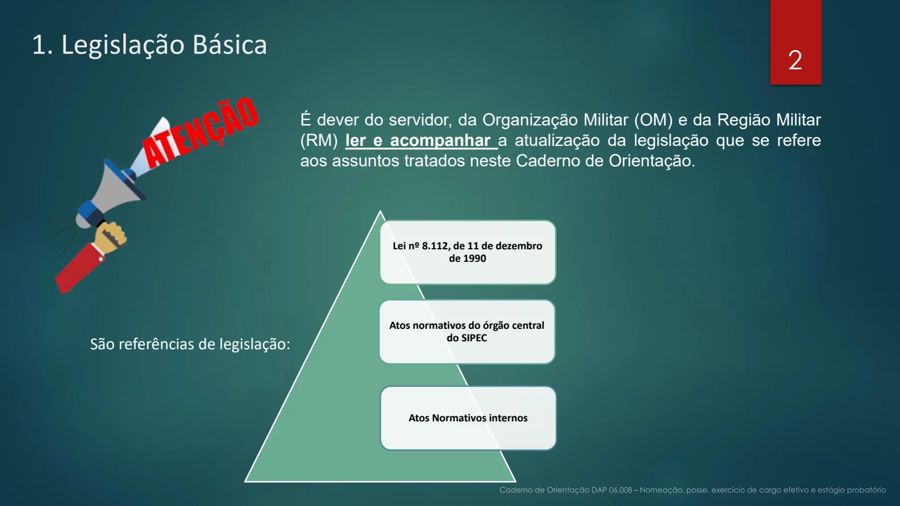
Legislação básica
PDF · p. 31. Legislação Básica
1.1. Nomeação para cargo efetivo:
3
Referência Título/Assunto Data Publicação
Decisão Normativa/TCU 212/98 - Plenário
É legal o aproveitamento de candidatos aprovados em concurso
realizado por outro órgão, desde que dentro do mesmo Poder, para
provimento de cargo idêntico àquele para o qual foi realizado, que
tenha iguais denominação e descrição e que envolva as mesmas
atribuições, competências, direitos e deveres, de tal modo que se
exijam idênticos requisitos de habilitação acadêmica e profissional
e sejam observadas a ordem de classificação e a finalidade ou
destinação prevista no edital, que deverá antever a possibilidade
desse aproveitamento (Acórdão 569/2009 - TCU - Plenário, de
relatoria do Ministro Aroldo Cedraz).
25 JUN 98
https://pesquisa.apps.tcu.gov.br/doc
umento/jurisprudencia-
selecionada/decis%25C3%25A3o%
2520normativa/%2520/score%2520
desc%252C%2520COLEGIADO%2
520asc%252C%2520ANOACORD
AO%2520desc%252C%2520NUM
ACORDAO%2520desc/0/sinonimos
%253Dtrue
Acórdão 569/2006-Plenário
O aproveitamento de candidatos aprovados em concurso realizado
por outro órgão somente poderá alcançar cargos que tenham seu
exercício previsto para as mesmas localidades em que terão
exercício os servidores do órgão promotor do certame, desde que
observados todos os requisitos fixados pela Decisão Normativa
TCU 212/1998.
19 ABR 06
https://pesquisa.apps.tcu.gov.br/doc
umento/jurisprudencia-
selecionada/decis%25C3%25A3o%
2520normativa/%2520/score%2520
desc%252C%2520COLEGIADO%2
520asc%252C%2520ANOACORD
AO%2520desc%252C%2520NUM
ACORDAO%2520desc/0/sinonimos
%253Dtrue
Portaria - DGP/C Ex nº 458, de 10 de agosto
de 2023
Delega e subdelega competência para a prática de atos
administrativos no âmbito do Departamento- Geral do Pessoal
(DGP).
10 AGO 23 Boletim do Exército nº 33/2023
Ver página original — tabelas, imagens e diagramas
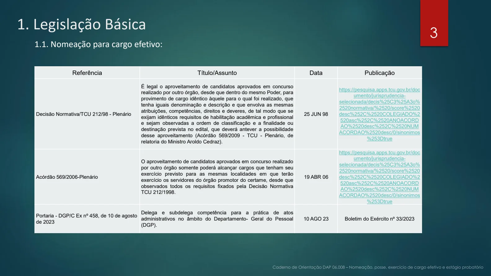
Legislação básica
PDF · p. 41. Legislação Básica
1.2. Posse e Exercício em cargo efetivo:
4
Referência Título/Assunto Data Publicação
Portaria Normativa nº 4, de 8 de julho
de 2013
Estabelece orientações aos órgãos e entidades integrantes do
Sistema de Pessoal Civil da Administração Federal - SIPEC,
quando da investidura em cargo público, efetivo ou em comissão,
ou em emprego público, quanto à exigência de apresentação de
declaração de que não é beneficiário de seguro-desemprego
8 JUL 13 DOU nº 131
de 10 JUL 13
Nota Técnica nº
121/2014/CGNOR/DENOP/SEGEP/M
P
O prazo para a posse de servidora que teve o ato de provimento
publicado durante o período de gozo da Licença à Gestante ou
da prorrogação desta deverá ter início após o encerramento da
referida prorrogação, conforme o art. 13 da Lei nº 8.112/90 c/c a
Constituição Federal e com o Estatuto da Criança e do
Adolescente, com vistas a máxima conferir efetividade ao
comando constitucional que trata da proteção à criança.
13 AGO 14 SIGEPE LEGIS
13 AGO 14
Nota Técnica nº 12.458/16-MP
Servidora pública em gozo de licença à gestante que for
nomeada para outro cargo público tem o direito à posse, que
poderá ocorrer observando-se tanto o prazo especial previsto no
§ 2º do art. 13 da Lei nº 8.112/90, como o prazo geral
estabelecido pelo § 1º do art. 13 da mesma lei, sem prejuízo,
nesta última hipótese, da continuidade do usufruto do período
restante da
licença.
31 AGO 16 SIGEPE LEGIS
31 AGO 16
Parecer AGU 13/00
A nomeação e a posse constituem relação jurídica entre o
servidor e o Estado, gerando direitos e deveres. A exoneração os
extingue.
Se a vacância de um cargo decorre da posse em outro
inacumulável, cessam os direitos e deveres adstritos ao cargo
que vagou e, em razão do cargo provido, são criados ou
contraídos outros, nos termos da legislação vigente na data da
nova investidura
11 DEZ 2000 DOU nº 239-E,
de 13 DEZ 00
Ver página original — tabelas, imagens e diagramas
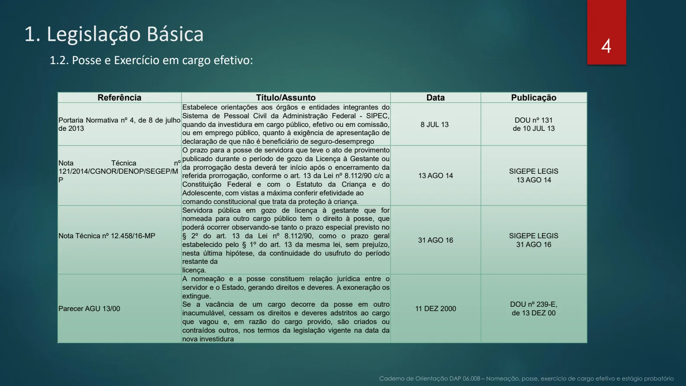
Legislação básica
PDF · p. 51. Legislação Básica
1.3. Estágio Probatório:
5
Referência Título/Assunto Data Publicação
Portaria n° 67/05-DGP Normas para a avaliação de desempenho, durante o período de
estágio probatório, dos servidores civis do comando do exército 27 ABR 05 BE 19/05
Acórdão TCU 1389/05
Aposentadoria durante estágio probatório. Impossibilidade.
Jurisprudência pacífica. Ilegalidade e negativa de registro. Aplicação
da Súmula TCU nº 106
16 AGO 05 DOU nº 163,
de 24 AGO 2005
Nota Técnica nº
40/10/COGES/DENOP/SRH/MP
Trata da possibilidade de afastamento de servidor em estágio
probatório para participar de curso de formação decorrente de
aprovação em concurso para outro cargo na Administração Pública
Federal.
25 JAN 10 SIGEPE LEGIS
25 JAN 2010
Nota Informativa SEI nº 333/2015-MP Trata de efeitos financeiros decorrentes da anulação do ato de
exoneração de servidor, em face de não aprovação no estágio
probatório e orientação acerca dos procedimentos cabíveis.
25 NOV 15 SIGEPE LEGIS
26 NOV 2015
Nota Informativa nº 287/16-MP
Informações quanto à duração de estágio probatório de servidor
estável em cargo anterior, notadamente sobre a possibilidade de
fluência do prazo de licença capacitação durante o estágio probatório
no novo cargo.
21 FEV 16 SIGEPE LEGIS
22 FEV 2016
Ver página original — tabelas, imagens e diagramas
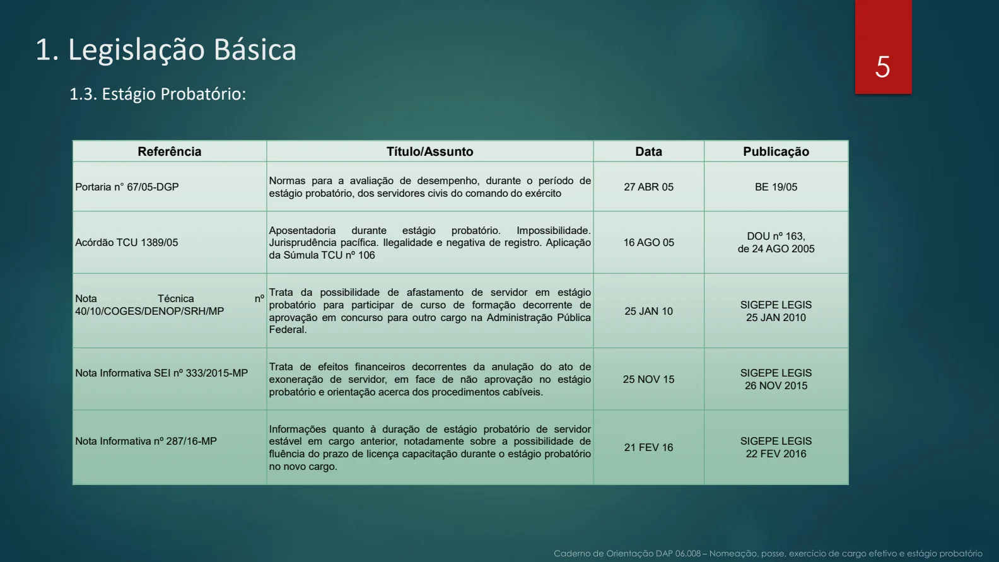
Conceitos
PDF · p. 662. Conceitos
2.1. Nomeação para cargo efetivo: é o provimento originário de um
cargo público vago. É publicada no Diário Oficial da União (DOU)
2.2. Posse em cargo efetivo: é o ato que completa a investidura no cargo público. A
posse dar-se-á pela assinatura do respectivo termo, no qual deverão constar as
atribuições, os deveres, as responsabilidades e os direitos inerentes ao cargo
ocupado, que não poderão ser alterados unilateralmente, por qualquer das partes,
ressalvados os atos de ofício previstos em lei.
2.3. Exercício em cargo efetivo: é o efetivo desempenho das atribuições do
cargo público ou da função de confiança
2.4. Estágio probatório: é o período/processo que visa aferir se o servidor público
possui aptidão e capacidade para o desempenho do cargo de provimento efetivo
no qual ingressou por força de concurso público. Tem início com a entrada em
exercício no cargo, correspondendo aos primeiros 3 (três) anos de atividade, cujo
cumprimento satisfatório é requisito para aquisição da estabilidade.
Requisitos básicos
PDF · p. 73. REQUISITOS BÁSICOS
3.1. Nomeação:
Aprovação prévia em
concurso público de provas
ou de provas e títulos, de
acordo com a natureza e a
complexidade do cargo ou
emprego, na forma
prevista em lei,
ressalvadas as nomeações
para cargo em comissão
declarado em lei de livre
nomeação e exoneração
Obediência à
ordem de
classificação
e o prazo de
sua validade
do concurso
Ter nacionalidade brasileira ou
portuguesa e, no caso de
nacionalidade portuguesa, estar
amparado pelo estatuto de igualdade
entre brasileiros e portugueses, com
reconhecimento do gozo dos direitos
políticos, nos termos do § 1º do artigo
12 da Constituição Federal
Ter sido
nomeado por
meio de
portaria
publicada no
Diário Oficial
da União
(DOU)
Estar em gozo dos
direitos políticos e
estar quite com as
obrigações eleitorais e
militares
Ter idade mínima
de 18 anos
Possuir a escolaridade mínima
necessária para exercer o
cargo
Ser devidamente
aprovado em teste físico e
mental
3.2. Posse
Ver página original — tabelas, imagens e diagramas
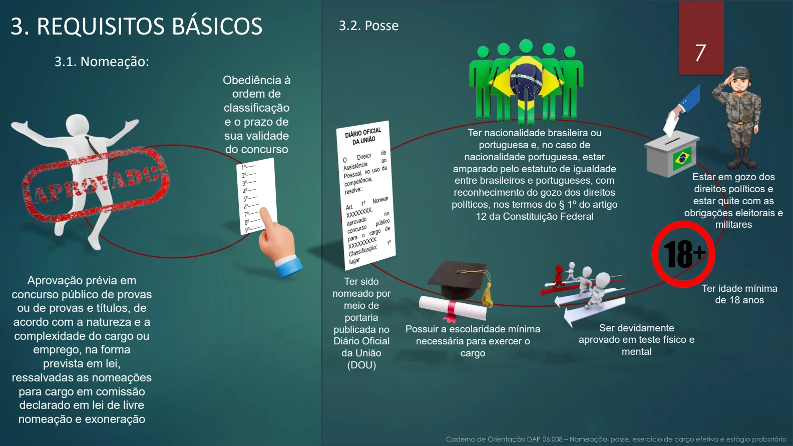
Requisitos básicos
PDF · p. 83. REQUISITOS BÁSICOS 3.4. Estágio Probatório:
Para ser aprovado no estágio probatório e alcançar a
estabilidade após três anos de efetivo exercício, o servidor
deverá ser aprovado na avaliação de desempenho, observados
os seguintes fatores:
1. assiduidade;
2. disciplina;
3. capacidade de iniciativa;
4. produtividade; e
5. responsabilidade.
3.3. Exercício
Assinatura do termo de
posse
Ver página original — tabelas, imagens e diagramas
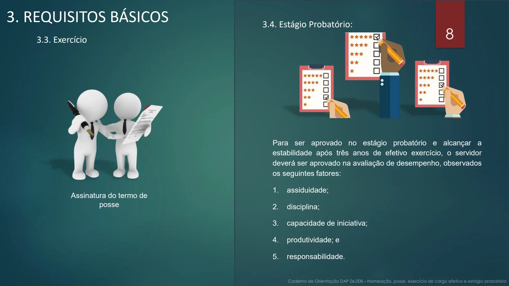
Nomeação
PDF · p. 94. INFORMAÇÕES GERAIS
4.1. Nomeação:
a) O provimento dos cargos públicos far-se-á mediante ato do Diretor de Assistência ao Pessoal, que homologará o resultado
final do concurso e publicará no DOU a relação dos candidatos aprovados no certame, por ordem de classificação.
b) Será tornado sem efeito o ato de nomeação se a posse não ocorrer no prazo previsto de 30 (trinta) dias após a sua
publicação.
c) Durante o prazo improrrogável previsto no edital de homologação, aquele aprovado em concurso público de provas ou de
provas e títulos será convocado com prioridade sobre novos concursados para assumir cargo ou emprego, na carreira.
d) Durante o prazo de validade do concurso, o candidato aprovado tem direito subjetivo de ser nomeado segundo a ordem
classificatória.
e) A aprovação em concurso público não gera direito líquido e certo de nomeação e, sim, gera a mera expectativa de direito,
competindo à Administração, dentro de seu poder discricionário, nomear os candidatos aprovados de acordo com a sua
conveniência e oportunidade.
f) É possível o provimento de vaga (s) por candidato (s) aprovado (s) em concurso público realizado por outro órgão ou
entidade do mesmo Poder, cujos planos de cargos e vencimentos sejam idênticos, observado sempre o interesse da
administração.
g) O aproveitamento de candidatos aprovados em concurso realizado por outro órgão somente poderá alcançar cargos que
tenham seu exercício previsto para as mesmas localidades em que terão exercício os servidores do órgão promotor do
certame, desde que observados todos os requisitos fixados pela Decisão Normativa TCU 212/1998.
h) O candidato habilitado em concurso público será nomeado para trabalhar em organização sediada na localidade escolhida
quando tenha realizado a sua inscrição.
i) O candidato aprovado deve aceitar ou desistir da nomeação, por meio do preenchimento e assinatura da Declaração de
Aceitação do Cargo – Anexo A ou Declaração de Desistência de Cargo – Anexo B.
Posse
PDF · p. 104. INFORMAÇÕES GERAIS
4.2. Posse:
a) Haverá posse somente nos casos de provimento de cargo por nomeação.
b) A posse em cargo público dependerá de prévia inspeção médica oficial.
c) Somente será empossado aquele que for julgado apto física e mentalmente para o exercício do cargo.
d) O prazo para tomar posse é de 30 (trinta) dias, corridos, contados a partir da publicação do ato de nomeação no
DOU, excluindo-se o dia do começo e incluindo-se o do vencimento, ficando prorrogado, para o primeiro dia útil
seguinte, o prazo vencido no dia em que não haja expediente.
e) No ato da posse, o servidor apresentará declaração de bens e valores que constituem seu patrimônio e ainda para
evitar a acumulação indevida de cargos o nomeado deverá declarar formalmente que não exerce outro cargo,
emprego ou função pública.
f) O servidor deverá assinar os seguintes documentos:
g) A OM deve providenciar a Ficha Cadastral do Servidor - Anexo E
Declaração de não exercício em outro cargo público e de bens e valores possuídos Anexo C
Termo de posse Anexo D
Ver página original — tabelas, imagens e diagramas
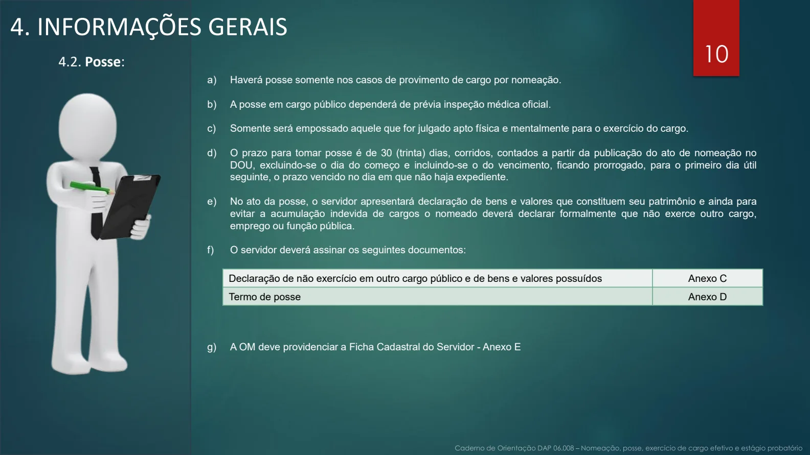
Posse
PDF · p. 114. INFORMAÇÕES GERAIS
4.2. Posse (continuação):
h) Em se tratando de pessoa já detentora da condição de servidor público federal e que se encontrar, na data de publicação
do ato de provimento, nas licenças ou afastamentos abaixo, o prazo será contado a partir do término dos impedimentos
listados abaixo:
• licença por motivo de doença em pessoa da família;
• licença para o serviço militar;
• licença para capacitação;
• férias;
• participação em programa de treinamento regularmente instituído ou em programa de pós-graduação stricto sensu no
País;
• júri e outros serviços obrigatórios por lei;
• licença à gestante, à adotante e à paternidade;
• para tratamento da própria saúde, até o limite de vinte e quatro meses, cumulativo ao longo do tempo de serviço
público prestado à União, em cargo de provimento efetivo;
• por motivo de acidente em serviço ou doença profissional;
• por convocação para o serviço militar;
• em deslocamento por motivo de remoção, redistribuição, requisição, cessão ou posto em exercício provisório; ou
• em participação em competição desportiva nacional ou convocação para integrar representação desportiva nacional,
no País ou no exterior, conforme disposto em lei específica.
Posse
PDF · p. 124. INFORMAÇÕES GERAIS
4.2. Posse (continuação):
A posse poderá ser efetivada mediante procuração específica.
Com a posse abre-se o prazo de 15 (quinze) dias para o empossado entrar em exercício.
Qualquer outra licença que não estiver em vigor na data da nomeação,
ainda que continuamente à primeira, não tem o condão de impedir o início
do prazo para a posse do servidor.
A servidora pública em usufruto de licença à gestante que for nomeada
para outro cargo público tem o direito à posse, a qual poderá ocorrer
observando-se tanto o prazo especial previsto no §2º do art. 13 da Lei nº
8.112, de 1990 (prazo máximo de 30 (trinta) dias após o término do período
de licença) como o prazo legal estabelecido pelo §1º do art. 13 da mesma
lei (prazo máximo de 30 (trinta) dias contados da publicação do ato de
provimento), sem prejuízo, nesta última hipótese, da continuidade do
usufruto do período restante da licença.
Exercício
PDF · p. 134. INFORMAÇÕES GERAIS
4.3. Exercício:
Exercício é o efetivo desempenho das atribuições do cargo público para o qual o servidor
foi nomeado, para o qual observa-se, também, que:
a) É de 15 (quinze) dias o prazo para o servidor empossado em cargo público entrar em
exercício, contados da data da posse.
b) O prazo para o exercício será contado em dias corridos, excluindo-se o dia do
começo e incluindo-se o do vencimento, ficando prorrogado para o primeiro dia útil
seguinte quando vencido em dia em que não haja expediente.
c) O servidor empossado que não entrar em exercício no prazo estabelecido, será
exonerado do cargo de ofício (ou seja, por ato unilateral da Administração).
d) É o exercício que confere ao servidor o direito à percepção da remuneração pelo
desempenho das atribuições do cargo.
e) Ao entrar em exercício, o servidor deverá assinar o Termo de Exercício - Anexo F
Ver página original — tabelas, imagens e diagramas
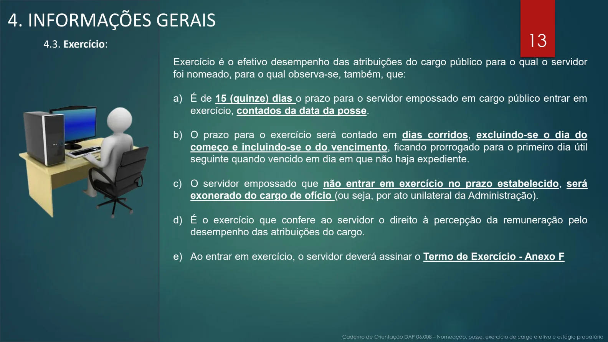
Estágio probatório
PDF · p. 144. INFORMAÇÕES GERAIS
4.4. Estágio Probatório:
a) Durante o estágio probatório, a Administração avalia o servidor quanto à assiduidade, disciplina,
capacidade de iniciativa, produtividade e responsabilidade, especificados e descritos na Ficha
Individual de Avaliação de Desempenho no Estágio Probatório – FIADEP (Anexo G).
b) O fator ASSIDUIDADE deve refletir a frequência do servidor no trabalho. O servidor perderá, neste
fator, 0,5 (zero vírgula cinco pontos) por cada falta injustificada ao serviço que tiver no período da
avaliação.
c) O servidor que não for aprovado poderá ser exonerado do cargo, deixando o serviço público ou sendo
reconduzido ao cargo anteriormente ocupado. Caso aprovado, o servidor estará habilitado à aquisição
da estabilidade, depois de completar três anos de exercício.
d) O servidor durante o estágio probatório será avaliado pelo chefe imediato, responsável direto pelo
acompanhamento e orientação do mesmo.
e) O servidor em estágio probatório, se removido, será avaliado pela chefia imediata de ambas as OM,
observados os períodos correspondentes. As fichas de avaliação deverão acompanhar os registros
funcionais do servidor.
f) A avaliação do servidor, no decurso do período do estágio probatório, far-se-á em 4 (quatro) etapas a
serem realizadas ao término do 8° (oitavo), 16° (décimo sexto), 24° (vigésimo quarto) e 32°
(trigésimo segundo) mês, contando-se a partir da data de ocupação do cargo.
g) Em cada etapa de avaliação serão atribuídos ao servidor, em cada um dos fatores descritos e
destacados no item “a” desta página, no mínimo, 0 (zero) e, no máximo, 10 (dez) pontos (com
aproximação para a unidade, ou seja, números inteiros).
Ver página original — tabelas, imagens e diagramas
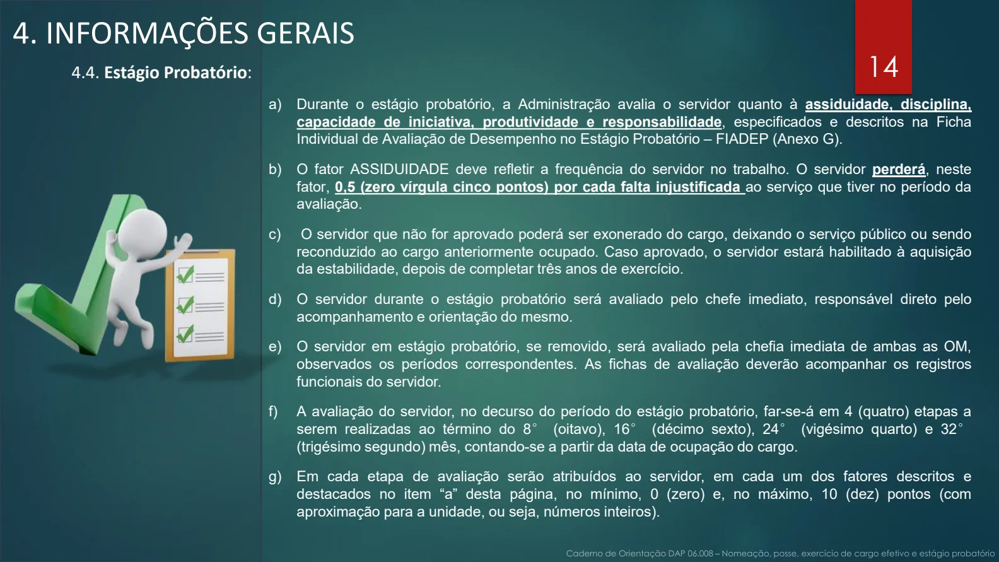
Estágio probatório
PDF · p. 154. INFORMAÇÕES GERAIS
4.4. Estágio Probatório (continuação):
h) Ao final da última etapa de avaliação atribuir-se-á pontuação final ao servidor avaliado. A pontuação final será a
resultante da soma dos pontos obtidos nas quatro etapas de avaliação, totalizando, no máximo, 200 (duzentos) pontos.
i) Será considerado aprovado no estágio probatório e, portanto, estável, o servidor que obtiver resultado final de, no
mínimo, 100 (cem) pontos, consideradas todas as etapas da avaliação a que tiver sido submetido.
j) Os avaliadores encaminharão a FIADEP à Seção de Pessoal da OM, no prazo de 5 (cinco) dias, após o término de cada
etapa da avaliação
k) O servidor avaliado deverá, obrigatoriamente, tomar ciência do resultado de cada uma das etapas da avaliação.
l) Caso o servidor avaliado se recuse a tomar ciência do resultado de qualquer das etapas da avaliação, será lançado termo
na FIADEP, com a assinatura de duas testemunhas e do avaliador.
m) O resultado final da avaliação será encaminhado à Diretoria de Assistência ao Pessoal (DAP), para homologação, tão
logo se encerre a última etapa de avaliação, por meio do Boletim de Avaliação de Desempenho no Estágio Probatório –
BADEP - Anexo H.
n) O servidor não aprovado no estágio probatório será exonerado ou, se estável, reconduzido ao cargo anteriormente
ocupado, observado o disposto no parágrafo único do art. 29 da Lei n ° 8.112, de 11/12/90.
o) Estágio probatório e estabilidade são institutos jurídicos distintos. Porém, estabelecem entre si uma relação íntima e,
até mesmo, indissociável. A estabilidade é a garantia constitucional de permanência no serviço público, outorgada ao
servidor ocupante de cargo de provimento efetivo por meio de concurso, adquirida após o transcurso de 3 (três) anos de
atividade e aprovação no estágio probatório.
p) A competência para baixar os atos de efetivação da estabilidade dos servidores aprovados no Estágio Probatório no
Comando do Exército é do Diretor de Assistência ao Pessoal, por delegação.
Estágio probatório
PDF · p. 164. INFORMAÇÕES GERAIS
4.4. Estágio Probatório (continuação):
• Da suspensão do estágio probatório:
a) O período do estágio probatório será suspenso em virtude de:
• licença por motivo de doença em pessoa da família;
• licença por motivo de afastamento do cônjuge, sem remuneração;
• licença para atividade política;
• afastamento para servir em organismo internacional de que o Brasil participe ou com o
qual coopere; e
• participação em curso de formação decorrente de aprovação em concurso para outro
cargo da Administração Pública Federal.
b) O período do estágio probatório será retomado a partir do término do impedimento.
c) O servidor em estágio probatório, cedido a outro órgão ou com lotação provisória, será
avaliado no órgão em que estiver em exercício, obedecendo às disposições contidas na Portaria
n° 067-DGP,de 27 de abril de 2005.
Estágio probatório
PDF · p. 174. INFORMAÇÕES GERAIS
4.4. Estágio Probatório (continuação):
• Dos avaliadores e dos recursos:
a) Os servidores removidos que se encontram em Estágio Probatório serão avaliados pelas chefias
imediatas de ambas Organizações Militares, observados os períodos correspondentes.
b) O servidor que, no período de avaliação, houver trabalhado sob a direção de mais de uma chefia, será
avaliado por aquela à qual esteve subordinado por maior tempo.
c) O servidor que discordar da pontuação obtida em cada etapa da avaliação poderá interpor recurso ao
Comandante da OM. Da decisão do Comandante da OM não caberá recurso.
d) O recurso deverá ser interposto no prazo de 10 (dez) dias corridos, da data da ciência do servidor
avaliado, e decidido no prazo de 5 (cinco) dias corridos, contados a partir do recebimento dos autos
pela autoridade julgadora.
e) Não será conhecido o recurso que for interposto fora do prazo.
f) O recurso será interposto por meio de requerimento, que poderá ser acompanhado dos documentos
que o servidor julgar convenientes.
g) Decidido o recurso, seu resultado será publicado no boletim interno da OM de lotação do servidor.
Documentos necessários
PDF · p. 185. DOCUMENTOS NECESSÁRIOS
5.1. Nomeação:
5.2. Posse:
Edital de homologação do resultado final do concurso público
Autorização do órgão central para nomeação
Declaração de aceitação (Anexo A) ou declaração de desistência (Anexo B)
Declaração de bens e valores que constituem seu patrimônio
Ata de inspeção de saúde
Portaria de nomeação, cuja elaboração e publicação são de responsabilidade
da DAP
Declaração de não exercício em outro cargo público e de bens e valores
possuídos, de preenchimento e assinatura sob responsabilidade do candidato
nomeado - ANEXO C e
Termo de posse, cuja elaboração é de responsabilidade da OM - ANEXO D
5.3. Exercício:
Ficha cadastral de servidor, a ser preenchida pelo servidor - ANEXO E
Termo de exercício, cuja elaboração é de responsabilidade da OM - ANEXO F
5.4. Estágio Probatório:
Ficha Individual de Avaliação do Estágio Probatório (FIADEP) - ANEXO G
Boletim de avaliação de desempenho do estágio probatório (BADEP) - ANEXO H
Ver página original — tabelas, imagens e diagramas
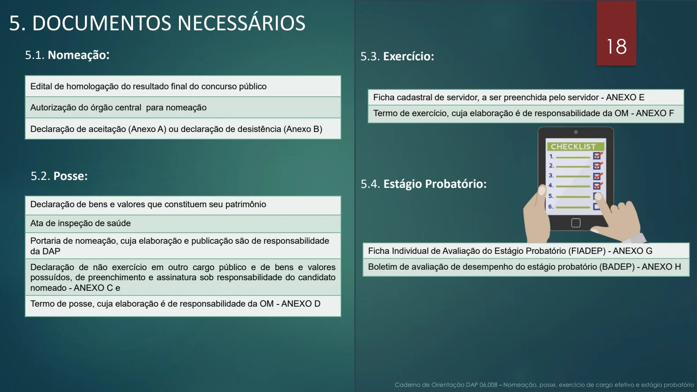
Tramitação
PDF · p. 196. TRAMITAÇÃO
6.1. Nomeação:
DAP/SPC
• Solicitar ao órgão
central do SIPEC:
a) a autorização para
nomeação dos
candidatos aprovados
no concurso público;
ou
b) a indicação dos
candidatos habilitados
em concurso público
realizado por outro
órgão, com cargo
idêntico àquele a ser
ocupado no C Ex
(Organizações
Militares) com a
mesma denominação,
descrição, atribuições,
competências, direitos
e deveres.
•Informar à RM os
nomes a serem
convocados para
apresentação de
documentos.
RM
•Remeter às OM do
interior às OM os
nomes e endereços
dos candidatos
classificados, para
convocação.
•Convocar os
candidatos, por meio
de carta ou telegrama
com Aviso de
Recebimento (AR), ou
por edital na mídia
escrita
DAP/SPC
•Elaborar a portaria de
nomeação.
•Providenciar atos para
a sua publicação da
portaria no DOU.
RM
• Verificar, com a devida
atenção, o atendimento,
por parte dos candidatos,
dos requisitos para a
posse e exercício.
• Solicitar aos candidatos a
entrega e/ou o
preenchimento dos
documentos prescritos nos
Anexos C e D.
• Providenciar a inspeção de
saúde dos candidatos que
aceitarem o cargo.
• Remeter à DAP/SPC as
declarações de aceitação e
de desistência.
• Convocar, pela segunda
vez, com AR, os
candidatos inscritos na sua
sede que não atenderem à
primeira chamada.
• Remeter à DAP os
comprovantes de
convocação (AR) dos
candidatos que não
atenderam à segunda
chamada.
DAP/SPC
•Elaborar portaria
tornando sem efeito as
nomeações dos
candidatos desistentes
e dos que não
atenderem às
convocações.
•Solicitar ao órgão
central do SIPEC a
substituição dos
concursados que não
tomaram posse
Ver página original — tabelas, imagens e diagramas
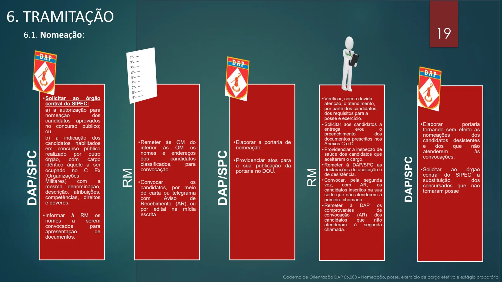
Tramitação
PDF · p. 206. TRAMITAÇÃO
6.2. Posse e Exercício:
RM
•Conferir, com a devida atenção, o
cumprimento, por parte dos candidatos,
dos seguintes requisitos: ter idade
mínima de 18 anos e possuir grau de
escolaridade e/ou formação específica
exigida para ingresso no cargo a que
concorreu.
•Convocar os candidatos em sua sede,
cujos nomes e endereços forem
remetidos pela DAP, encaminhando às
OM do interior aqueles de seu
interesse.
•Solicitar aos candidatos a declaração
de não exercício de outro cargo
público e de bens e valores
possuídos (Anexo C).
•Providenciar a inspeção de saúde dos
candidatos que aceitarem o cargo.
OM
•Remeter à DAP, via RM, o termo de
posse (Anexo D), o termo de
exercício (Anexo F) e a ficha
cadastral de servidor (Anexos E),
devidamente assinados.
DAP/SPC
•Cadastrar os dados de todos os
servidores que tomaram posse e
entraram em exercício nomeados no
Sistema de Apreciação e Registro dos
Atos de Admissões e Concessões
(SISAC/TCU).
•Elaborar os respectivos processos e
encaminhá-los ao CCIEx, para fins de
emissão, no SISAC/TCU, dos
pareceres quanto à legalidade dos
atos de nomeação.
Ver página original — tabelas, imagens e diagramas
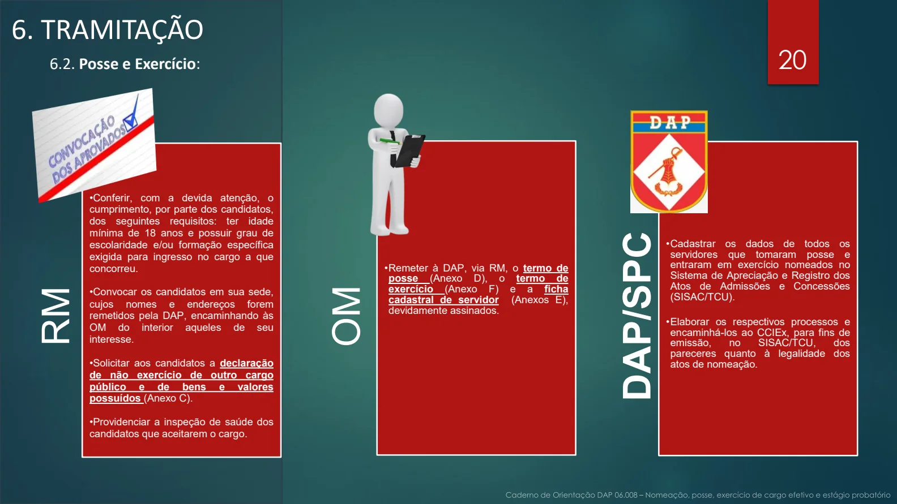
Tramitação
PDF · p. 216. TRAMITAÇÃO
6.3. Estágio Probatório:
OM
• Avaliar o servidor nas 4 (quatro) etapas a serem
realizadas ao término do 8° (oitavo), 16° (décimo
sexto), 24° (vigésimo quarto) e 32° (trigésimo
segundo) mês, contando-se a partir da data de ocupação
do cargo.
• Calcular a média final das 4 (quatro) avaliações, no
trigésimo segundo mês, transcrevendo-a para boletim de
avaliação de desempenho que deverá ser encaminhado
à DAP.
• Em caso de reprovação, anexar as 4 (quatro) fichas
individuais ao boletim de avaliação de desempenho, que
deverá ser encaminhado diretamente à DAP.
DAP/SPC
• Providenciar a portaria de efetivação da
estabilidade do servidor aprovado, ou
• Providenciar a portaria de exoneração do
servidor reprovado.
Ver página original — tabelas, imagens e diagramas
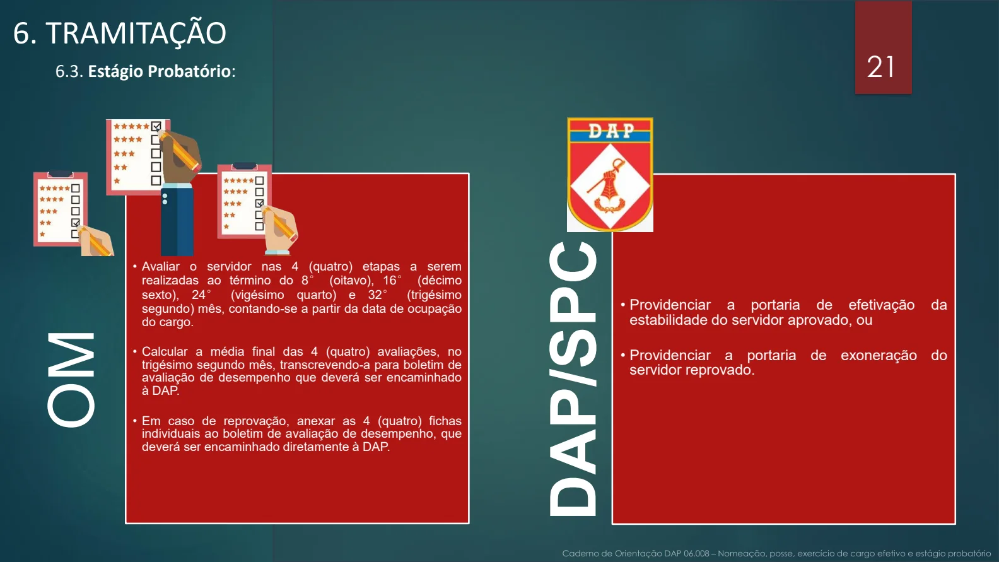
Fontes e elaboração
PDF · p. 22ELABORAÇÃO:
ASSESSORIA TÉCNICA DA SPC/DAP
SUBSEÇÃO DE BENEFÍCIOS DA SPC/DAP
MARÇO DE 2024
Para conhecer melhor o assunto, leia as
legislações indicadas no início deste caderno, disponíveis no link:
https://legis.sigepe.gov.br/legis/pesquisa-avancada
Ver página original — tabelas, imagens e diagramas
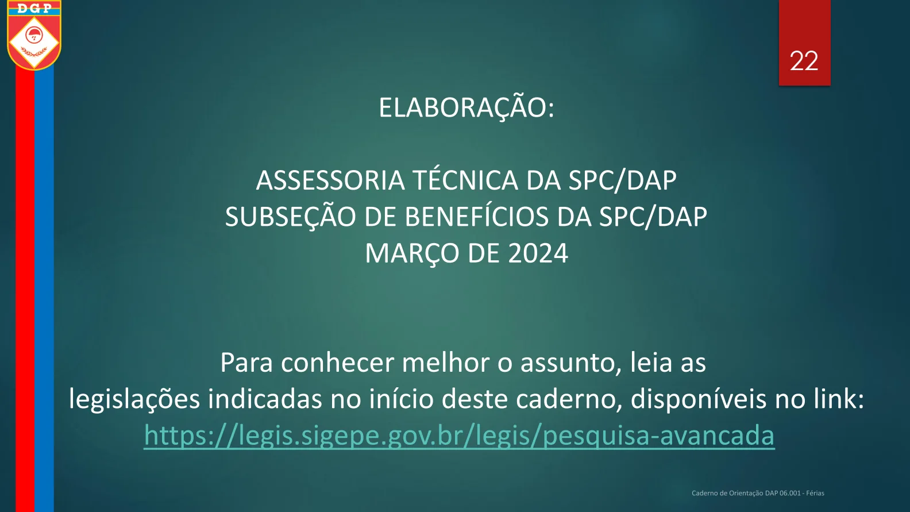
Anexos e modelos
PDF · p. 23ANEXOS
ANEXO A
Declaração de Aceitação de Cargo
MINISTÉRIO DA DEFESA
EXÉRCITO BRASILEIRO
(escalões hierárquicos até a OM expedidora)
(Denominação histórica)
DECLARAÇÃO DE ACEITAÇÃO DE CARGO
EU, _______________________________________________________,
(nome completo) portador da Carteira de Identidade n o _____________, órgão
expedidor: ______________, CPF: __________________, nascido em ____/____/____,
na cidade/estado_______________________________________, residente e
domiciliado à ___________________________________________________________,
filho (a) de________________________________ e ____________________________,
declaro que aceito minha nomeação, no C omando do Exército, para o cargo de
___________________.
(Local e data)
____________________
Nome e assinatura
Ver página original — tabelas, imagens e diagramas
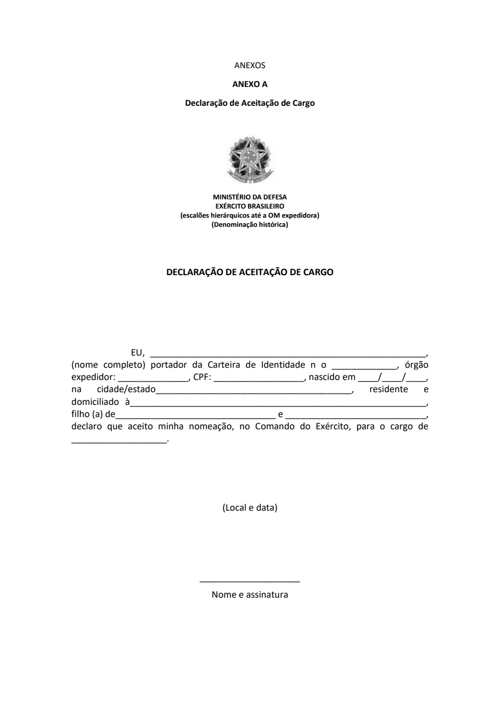
Anexos e modelos
PDF · p. 24ANEXO B
Declaração de Desistência de Cargo
MINISTÉRIO DA DEFESA
EXÉRCITO BRASILEIRO
(escalões hierárquicos até a OM expedidora)
(Denominação histórica)
DECLARAÇÃO DE DESISTÊNCIA DE CARGO
Declaro, junto à Diretoria de Assistência ao Pessoal, do COMANDO DO
EXÉRCITO, que desisto de assumir o cargo de ________________________, para o qual
fui habilitado (a) através do concurso realizado pelo
_________________________________________________, classificado (a) em _____
(lugar), conforme consta do edital de homologação, datado de ____/____/____,
publicado no DOU nº___, de ____/______/____, ficando ciente que estou desistindo do
referido concurso, de acordo com o subitem _______ do Edital nº _____, publicado no
DOU nº ____, de ____/_____/____.
(Local e data)
____________________
Nome e assinatura
TESTEMUNHAS:
1ª ______________________________________
Nome e assinatura da 1ª testemunha
2ª ______________________________________
Nome e assinatura da 2ª testemunha
Ver página original — tabelas, imagens e diagramas
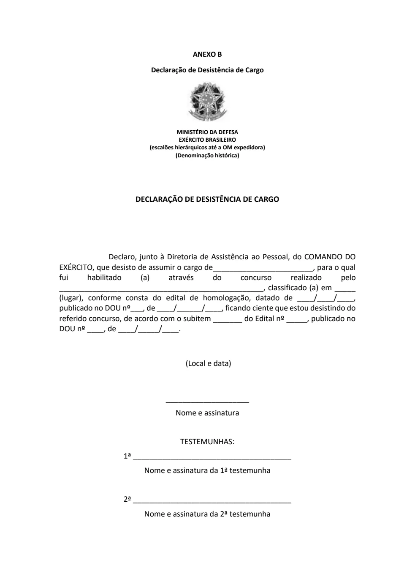
Anexos e modelos
PDF · p. 25ANEXO C
Declaração de Não Exercício em Outro Cargo Público e de Bens e Valores Possuídos
MINISTÉRIO DA DEFESA
EXÉRCITO BRASILEIRO
(escalões hierárquicos até a OM expedidora)
(Denominação histórica)
DECLARAÇÃO DE NÃO EXERCÍCIO EM OUTRO CARGO PÚBLICO E DE BENS E VALORES
POSSUÍDOS
Eu, ______________________________________________________,
brasileiro (a), estado civil _____________ , residente e domiciliado (a) à
_______________________________________, nomeado (a) para o cargo de
_______________, por meio da Portaria no _____ -DAP/SPC, de ___/___/___, publicada
no DOU nº ______, de ___/___/_ __/, declaro, para fins de posse no Serviço Público,
especificamente no Comando do Exército, que não exerço cargo ou função pública e que
possuo os seguintes bens:
_______________________________________________________________________
_______________________________________________________________________
_______________________________________________________________________
(Local e data)
____________________
Nome e assinatura
Ver página original — tabelas, imagens e diagramas
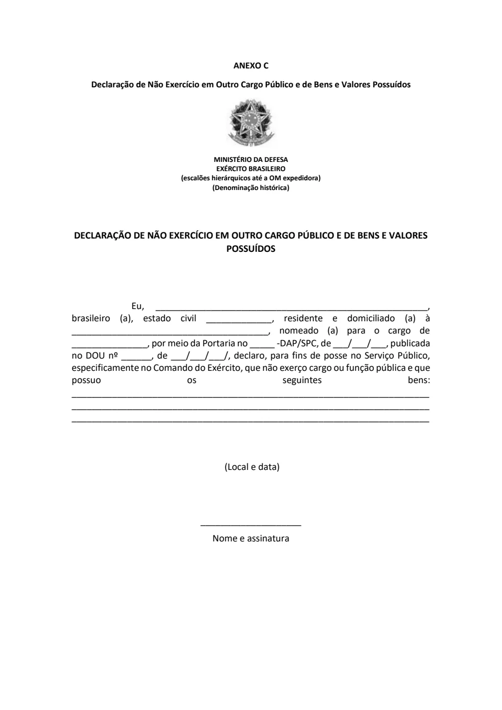
Anexos e modelos
PDF · p. 26ANEXO D
Termo de Posse
MINISTÉRIO DA DEFESA
EXÉRCITO BRASILEIRO
(escalões hierárquicos até a OM expedidora)
(Denominação histórica)
TERMO DE POSSE
O_________________________________________________________
_________, (Cmt, Ch ou Dir da OM) tendo em vista o disposto no art. 13, da Lei nº 8.112,
de 11 de dezembro de 1990, emposs a nesta data o (a) servidor (a)
________________________________________________________________, ( nome
do (a) candidato (a)) nomeado (a) pela Portaria nº ________-DAP/SPC, de ___/___/___,
publicada no DOU nº ____, de ___/___/___, seção 2, página ____, para exercer o cargo
efetivo de ___________________, código ________________, classe __ padrão ____,
habilitado em concurso público.
O (a) servidor (a) apresentou os documentos exigidos por lei e prestou o
compromisso de fielmente cumprir com as atribuições que lhe são peculiares, de acordo
com o que consta do Decreto nº __________, de ___/___/___, com os deveres e
responsabilidades constantes do Título III da menci onada lei, bem como se
comprometeu a observar o Código de Ética Profissional do Servidor Público Civil do
Poder Executivo Federal, aprovado pelo Decreto nº 1.171, de 22 de junho de 1994,
anexando, a este termo, declaração quanto ao exercício ou não de carg o ou função
pública.
E, para firmeza e validade do que acima é declarado, e u,
___________________________, lavrei o presente termo.
(Local e data)
__________________________________ _______________________________
Nome e assinatura Cmt, Ch ou Dir da OM Nome e assinatura do (a) candidato (a)
__________________________________________
Nome e assinatura do Encarregado de Pessoal Civil
Ver página original — tabelas, imagens e diagramas
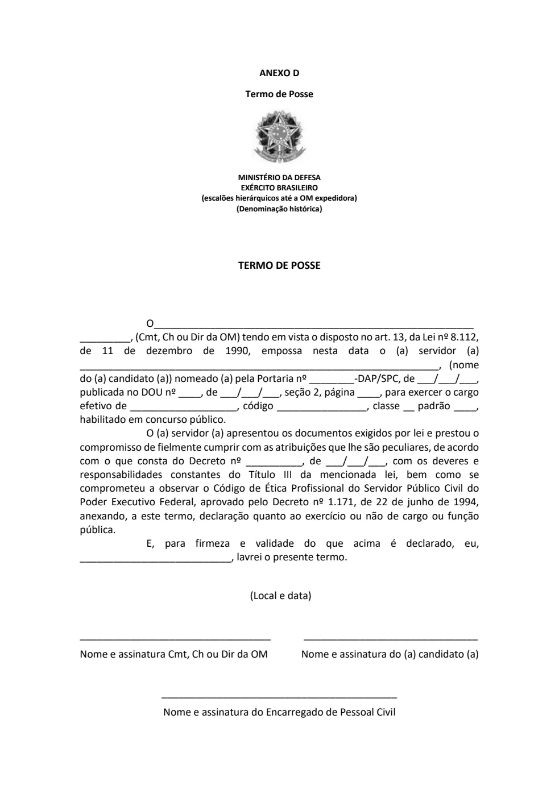
Anexos e modelos
PDF · p. 27ANEXO E
Ficha Cadastral de Servidor
MINISTÉRIO DA DEFESA
EXÉRCITO BRASILEIRO
(escalões hierárquicos até a OM expedidora)
(Denominação histórica)
FICHA CADASTRAL DE SERVIDOR
1. DADOS PESSOAIS
CÓDIGO PESSOAL MATRÍCULA SIAPE
NOME DO SERVIDOR
NOME SOCIAL
IDENTIDADE ÓRGÃO EXPEDIDOR
DATA DE EXPEDIÇÃO CPF
PIS/PASEP CERT.RESERVISTA
TÍTULO ELEITORAL ZONA SEÇÃO
FILIAÇÃO
DATA DE NASCIMENTO NATURALIDADE
ESTADO ESCOLARIDADE
SEXO FEMININO MASCULINO OUTRO
CÔNJUGE/COMPANHEIRO(A)
ENDEREÇO
CIDADE CEP
2. DADOS DOS DEPENDENTES
NOME DATA DE NASCIMENTO PARENTESCO
3. DADOS FUNCIONAIS
PORTARIA DE NOMEAÇÃO DATA DE PUBLICAÇÃO
DATA DA POSSE DATA DE EXERCÍCIO
CATEGORIA FUNCIONAL CÓDIGO
CLASSE PADRÃO
(Local e data)
___________________________________________
Nome e assinatura do Encarregado de Pessoal Civil
Ver página original — tabelas, imagens e diagramas
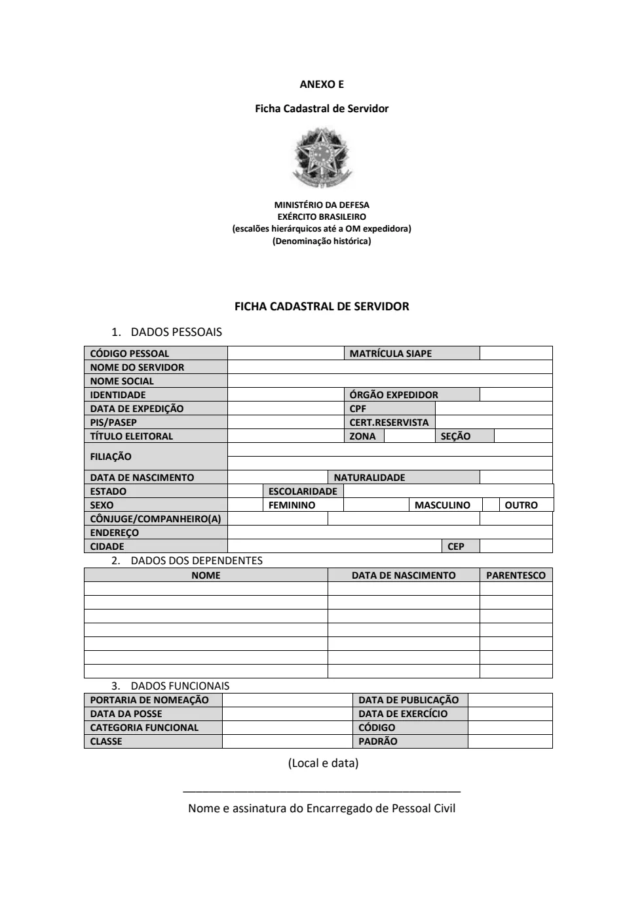
Anexos e modelos
PDF · p. 28ANEXO F
TERMO DE EXERCÍCIO
MINISTÉRIO DA DEFESA
EXÉRCITO BRASILEIRO
(escalões hierárquicos até a OM expedidora)
(Denominação histórica)
TERMO DE EXERCÍCIO
___________________________________________________________
______________, (nome do candidato) nomeado (a) para este Comando através da
Portaria nº_______________-DAP/SPC, de ___/___/___, publicada no DOU nº____, de
___/___/___, entrou em exercício em __ _/___/___, nesta cidade de (do)
_______________________,no cargo de _________________________________,
código _______________, classe ____, padrão ___, de acordo com o parágrafo 1º, do
art. 15, da Lei nº 8.112, de 11 DEZ 1990.
(Local e data)
__________________________________
Nome e assinatura Cmt, Ch ou Dir da OM
___________________________________
Nome e assinatura do (a) candidato (a)
___________________________________________
Nome e assinatura do Encarregado de Pessoal Civil
Ver página original — tabelas, imagens e diagramas
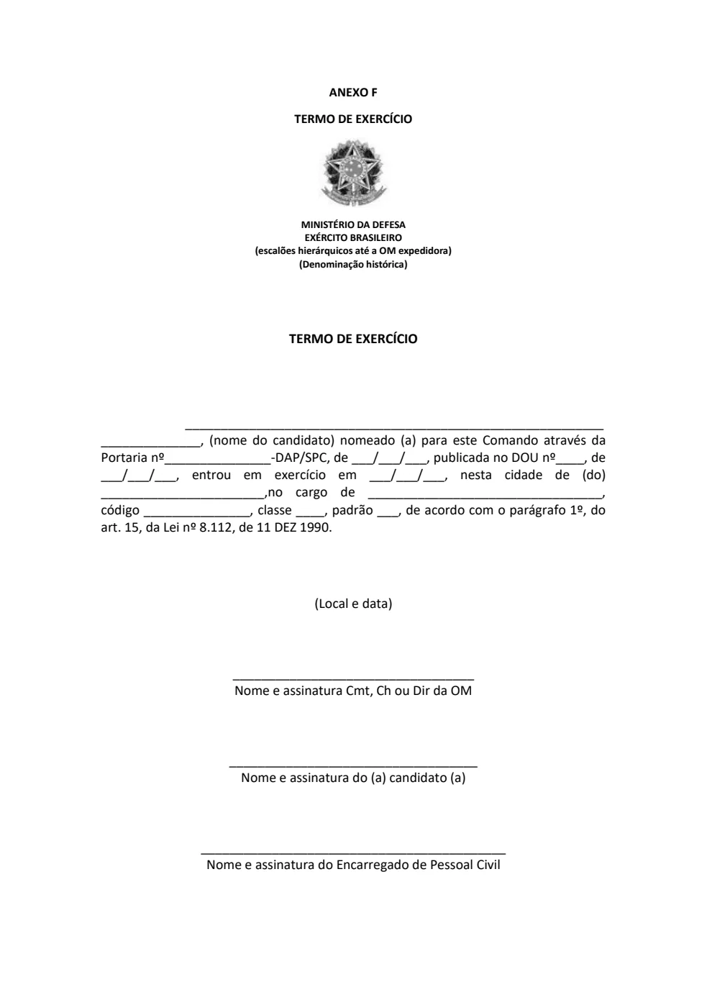
Anexos e modelos
PDF · p. 29ANEXO G
Ficha Individual de Avaliação do Estágio Probatório (FIADEP)
MINISTÉRIO DA DEFESA
EXÉRCITO BRASILEIRO
(escalões hierárquicos até a OM expedidora)
(Denominação histórica)
FICHA INDIVIDUAL DE AVALIAÇÃO DO ESTÁGIO PROBATÓRIO (FIADEP)
Art. 20 DA LEI Nº 8.112/90
CONFIDENCIAL
NOME
CARGO MATRÍCULA SIAPE
CLASSE PADRÃO LOTAÇÃO
ATRIBUTOS DESCRIÇÃO PONTUAÇÃO
ASSIDUIDADE Frequência ao local de trabalho para o cumprimento de
suas atribuições.
DISCIPLINA
Capacidade de cumprir normas e regulamentos, bem
como de observar e respeitar os níveis hierárquicos,
aceitando críticas construtivas.
INICIATIVA
Capacidade de se antecipar aos fatos e empreender
alternativas inovadoras para a solução de problemas de
trabalho.
PRODUTIVIDADE
Nível de atenção que dispensa à execução de seu
trabalho, suficiente para levar a um resultado de boa
qualidade em tempo hábil.
RESPONSABILIDADE
Atuação demonstrada no cumprimento de suas
atribuições, na observância dos prazos estabelecidos,
na guarda de valores, documentos e informações e na
conservação de equipamentos e materiais.
TOTAL DE PONTOS
Em _____ / _____ / _____
_______________________________ _______________________________
Nome e assinatura do AVALIADO Nome e assinatura do AVALIADOR
Ver página original — tabelas, imagens e diagramas
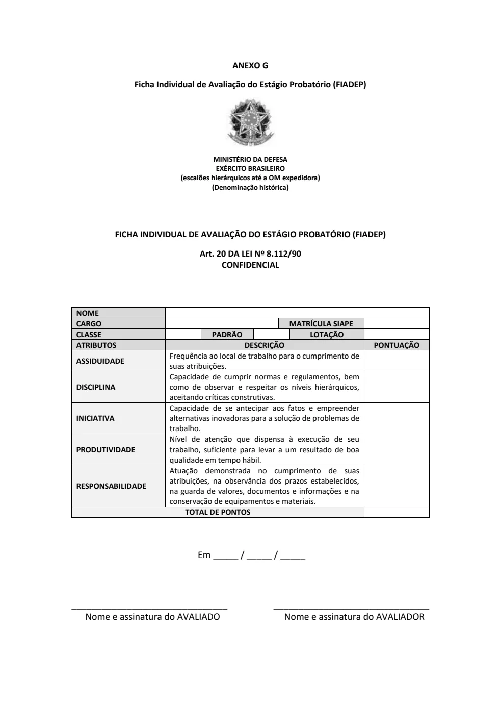
Anexos e modelos
PDF · p. 30ANEXO H
Boletim de Avaliação de Desempenho do Estágio Probatório (BADEP)
MINISTÉRIO DA DEFESA
EXÉRCITO BRASILEIRO
(escalões hierárquicos até a OM expedidora)
(Denominação histórica)
BOLETIM DE AVALIAÇÃO DE DESEMPENHO DO ESTÁGIO PROBATÓRIO (BADEP)
CÓDIGO DA OM SIGLA DA OM
MATRÍCULA
SIAPE
CÓDIGO DO
CARGO NOME PONTOS
TOTAIS
(Local e data)
________________________________
Assinatura
Ver página original — tabelas, imagens e diagramas
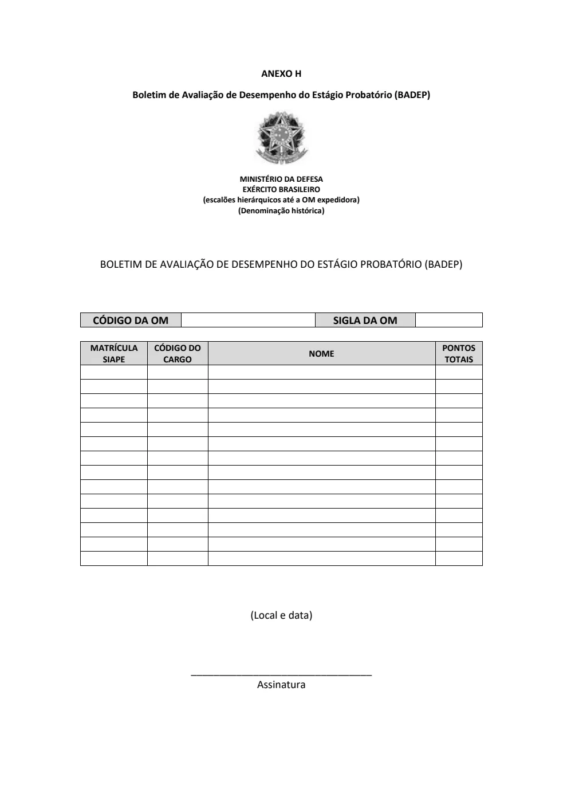